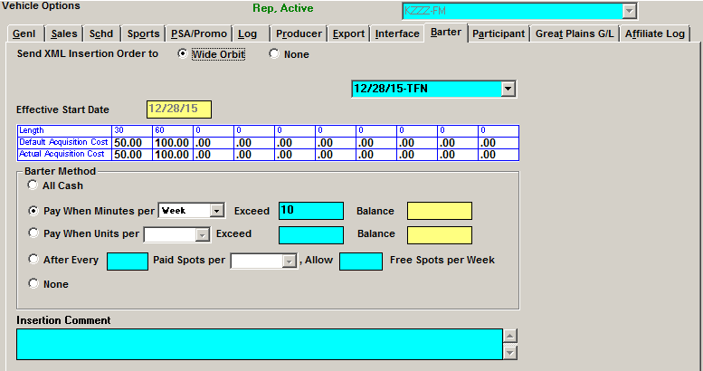
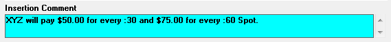
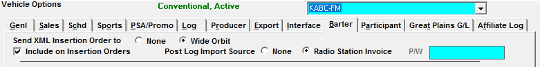
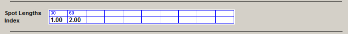
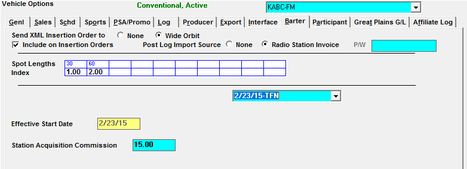

Barter Options
The barter tab is only available for Rep vehicles on software versions prior to version 7.1. On version 7.1 and above, additional fields are available on the Barter tab for Conventional, NTR, Rep, Selling vehicles.
Prior to Version 7.1
On software versions prior to version 7.1, the Barter screen is only available for use with Rep vehicles. The Barter screen allows you to enable a rep vehicle for exporting using the Station XML export, and set the acquisition costs and terms between your network and your rep stations, which will be defaulted in the acquisition field in proposal/orders, and calculated in net-net reports.

Set the “Send XML Insertion Order to” setting to “Wide Orbit” to include this rep vehicle on the output of the Station XML export. For more information about this export, please see the Traffic Exports help document that is available on the Counterpoint website.
Previously created terms can be viewed by selecting it from the dropdown menu near the top of the screen. New Terms are created by selecting New from the dropdown menu, then entering a start date for the Barter agreement in the “Effective Start Date” field, along with the default acquisition cost for each spot length used. The default acquisition cost will be used by default as the acquisition cost when creating lines for this vehicle on Proposals and Orders, and will be deducted on net-net reports. If the default acquisition cost is different from the actual spot cost, the actual acquisition cost can be entered in the actual acquisition cost field for each spot length used.
Determining the Barter Method
There are five methods available:
- “All Cash”: is used when you pay for every spot booked with the station.
- “Pay When Minutes per Week/Month/Year Exceed X”: is used if a certain amount of minutes per week, month or year have no cost, but additional minutes over the agreed upon limit per week, month or year must be paid. (The balance field is used to track the balance for “per year” terms and is updated automatically when running the Barter Payments report for the first time for a month.)
- “Pay When Units per Week/Month/Year Exceed X”: is used when there is a certain amount of free units per week, month or year, but the acquisition cost must be paid when the number of units exceed the agreed upon amount. (The balance field is used to track the balance for “per year” terms and is updated automatically when running the Barter Payments report for the first time for a month.)
- “After every X paid spots per week/month/year, allow Y free spots per week/month/year”: is used if you receive a certain amount of free spots for a certain amount of spots purchased. For example, after setting it to “every 3 paid spots per week, allow 1 free spot per week”, that would mean if there were eight spots for the week, six would be paid and two would be free.
- “None”: all the spots are free (no acquisition cost applied).
Insertion Comment
The insertion comment can contain any pertinent information about the Barter agreement, and will appear on the insertion order for the station. Each vehicle can have a unique Insertion Comment.

Version 7.1 and Higher
To use acquisition costs in Version 7.1 and higher, the Barter feature in Traffic Site->Options must be checked on.
Non-Rep Barter
On version 7.1 and above, the Rep vehicle options that are available on the Barter tab continue to work as before, but there are additional fields available for Conventional, NTR, and Selling vehicles that can be defined if needed.

- “Send XML Insertion Order to”: when set to Wide Orbit, this vehicle will be included on the Station XML export (conventional and rep vehicles only). See the Traffic Exports help document for more information.
- “Include on Insertion Orders”: When checked on, this allows Conventional, NTR, Rep and Selling vehicles to appear in the vehicle selection list for the Insertion Order report.
- If “Include on insertion orders” is not checked, the vehicle will be excluded from the vehicle list on the insertion orders report selectivity screen.
- “Post Log Import Source”: Setting this to “Radio Station Invoice” allows the Radio Station Invoice Import to be activated in Post Log.
- Vehicles using this method are stations. The vehicle name must match the station’s call letters exactly.
- Vehicles using this method do not need affiliate agreements, as they receive their spot information through insertion orders only.
- During contract scheduling, spots for vehicles using this method will be sent to missed and moved into avails during the invoice import process.
Spot Length Index
On the Barter tab, if Barter is enabled and the vehicle is a conventional or selling vehicle, a Spot Lengths Index will appear as shown below. Define the index values to use for determining the acquisition cost at the contract line level by entering index values for each valid spot length.

As an example of how this could be set up for a 30 and a 60 second spot length, if the acquisition cost on the rate card was equal to the acquisition cost for the 30 second spot, then enter the number “1” as the index for the 30 second spot and press Save. If the acquisition cost for the 60 second spot is double the acquisition cost of the 30 second spot, then enter “2” as the index value for the 60 second spot length and press Save. Other index values can also be entered. An index value of 1.5 means the acquisition cost would be 1.5 times the default cost; an index value of .5 means the acquisition cost would be half the default cost; and so on.
When entering a contract line, if there is no index value for the corresponding spot length defined on the vehicle spot length index table, the system will then check the rate card Terms screen for the index value to use for the matching spot length and use that if it exists. If there’s no index value there either, then the acquisition cost that gets pulled into the contract will be zero.
Station Acquisition Commission Information
If the Site Options setting “Acquisition Commissionable for Conventional and Selling Vehicles” is checked on (and Barter is enabled), additional fields will appear that allow a station acquisition commission percentage to be set per vehicle.

- Acquisition Commission Percentages can be defined with a date span so that the commission percentage can be different for different time periods. The dropdown is used to view previously created spans or create a new one.
- “Effective Start Date”: This is the start date of the defined commission percentage.
- This date must be the first Monday of the broadcast month.
- This date cannot be prior to the last month invoiced. If a rate change occurs in the past, what is owed to the station must be manually calculated.
- “Station Acquisition Commission”: If gross acquisition cost dollars are used, this field is used to enter the commission percentage. For example, “20” is 20%.
- The commission due to the station is calculated on the Acquisition Payables Fee report using the acquisition fee entered in rate card or on the contract and the commission percentage entered in this field.
- If acquisition dollars are entered as net figures, this field can be left at zero.